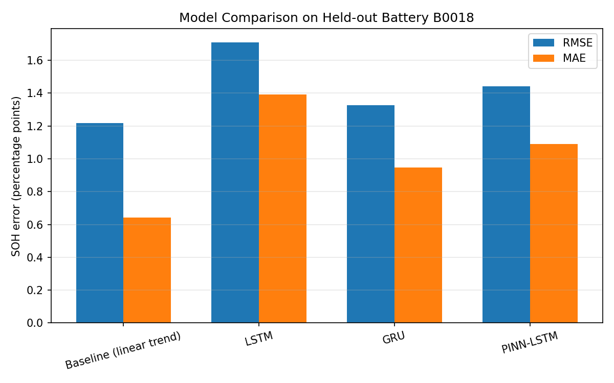
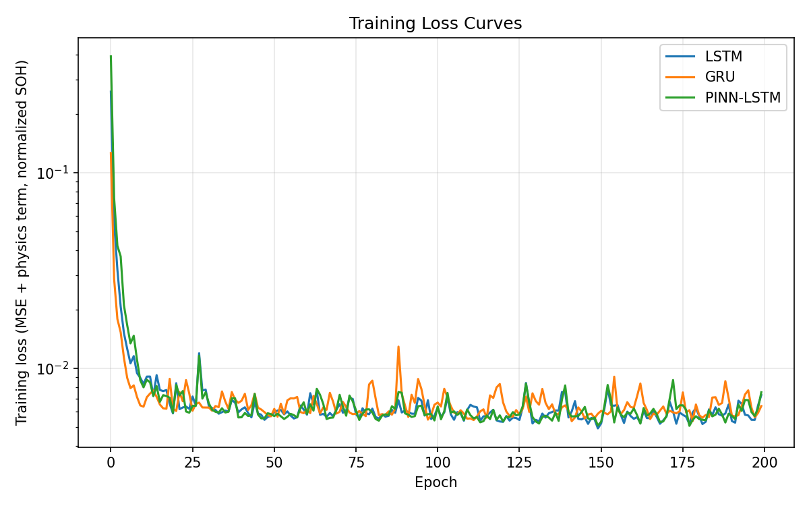

Physics-Informed LSTM for Li-ion Battery State-of-Health Estimation
Tldr; I built four ways to predict how worn out a lithium-ion battery is (its state of health, or SOH) from NASA's battery aging data: a plain linear trend, an LSTM, a GRU, and a physics-informed LSTM that gets penalized for predicting a battery "healed" itself. I tested all of them on a battery none of the neural models ever saw. The simple linear trend won on accuracy. The physics-informed part still did something real though: turning up the physics penalty made the LSTM both more accurate and more physically believable at the same time. The biggest thing I learned is that with this little data, a simple model is really hard to beat.
Why I built this
Batteries wear out. A phone battery that used to last all day eventually only makes it a few hours. That decline has a name, state of health (SOH), and being able to estimate it automatically instead of just watching a battery slowly die is a real engineering problem. It matters most for EVs and spacecraft, where you actually need to know how much life is left before a battery fails on you.
I built this after reading a paper out of UCF's Dey Power Electronics Lab (DPEL). It uses a physics-informed neural network (PINN) to estimate circuit parameters that drift with age inside a power converter, in real time, from indirect measurements instead of a direct reading. Essentially a battery's internal state is the same kind of problem: a component whose properties change with age, and you have to infer that instead of measuring it directly. Same underlying idea, different object. It seemed like a good excuse to actually implement the pattern myself instead of just reading about it.
So the plan was: build four different ways to predict SOH, compare them fairly, and be honest about what actually worked and what didn't. Same rigor I used comparing a CNN, ResNet-18 and a Vision Transformer in an earlier CIFAR-10 project.
Background: what SOH actually is
Capacity-based SOH
There are a few ways to define state of health, but the most common one, and the one I used, is based on capacity: how much charge the battery can still hold compared to when it was new.
SOH (%) = 100 × (current capacity) / (initial capacity)A brand-new cell starts at 100%. A common rule of thumb is that a cell is considered at end of life for demanding uses like EVs once it drops to around 70–80% of its original capacity.
Why it's hard to measure
The catch is that you can't just read capacity off a battery like you'd read its voltage. To measure capacity directly, you'd have to fully charge it and then fully discharge it under controlled conditions while counting the charge that comes out. That's slow, and it's not something you can do in the middle of using the battery. So in practice, SOH has to be estimated from things you can measure during normal use: voltage, current, temperature, and how long a discharge takes.
Why batteries lose capacity
Inside a lithium-ion cell, capacity fades for a few reasons. One of the big ones is that a thin layer called the solid electrolyte interphase (SEI) keeps slowly growing on the electrode, and it traps lithium that can no longer carry charge. The electrode materials themselves also wear down with repeated cycling. The important part for this project is that these are one-way processes. Under normal cycling, a battery doesn't get its capacity back, which is exactly the physics rule I ended up building into the model.
There's one interesting exception that shows up in the data: if a battery rests for a while between cycling sessions, it can recover a small amount of usable capacity for a bit. It's a temporary relaxation effect, not real healing, and it ends up mattering a lot in the results.
Background: the models
Recurrent neural networks in a nutshell
Battery aging is a sequence. What the battery looks like on cycle 100 depends on cycles 1 through 99. A regular neural network looks at one input at a time, but a recurrent neural network (RNN) processes a sequence step by step and carries a hidden state forward, so it has a kind of memory of what it's already seen. The problem with a basic RNN is that its memory fades fast, and it's hard to train on longer sequences.
LSTM
A Long Short-Term Memory (LSTM) network fixes that by adding a separate cell state and three gates that control it:
- Forget gate: decides what old information to throw away.
- Input gate: decides what new information to store.
- Output gate: decides what part of the memory to pass on as the output for this step.
Essentially the gates let the network learn what's worth remembering over longer stretches, which is why LSTMs are a common choice for time-series problems like this one.
GRU
A Gated Recurrent Unit (GRU) is a simpler version of the same idea. It merges the cell state and hidden state and uses two gates (update and reset) instead of three. It has fewer parameters, which can help when you don't have much data. I included it so I could check whether the cell type itself makes a difference.
What "physics-informed" means
A normal neural network only learns from data: it gets penalized for being far from the right answer, and that's it. A physics-informed neural network adds a second penalty for breaking a known physical law. In the original PINN work by Raissi and colleagues, that law is a differential equation. In Dr. Dey's paper, it's a circuit equation for the converter. The loss ends up looking like:
loss = data_loss + λ · physics_loss
where λ controls how much the model cares about the physics compared to fitting
the data. The idea is that the physics acts like extra information, which is especially useful
when you don't have a lot of data.
The data
I used NASA Ames' well-known
Li-ion Battery Aging dataset:
four 18650 cells (B0005, B0006, B0007 and B0018) that NASA ran through repeated
charge/discharge/impedance cycles at room temperature until each one lost roughly 25–30% of
its rated capacity. I pulled the raw .mat files from a
GitHub mirror since
NASA's own hosting kept going down while I was working on this.
Getting it into a usable table
Each .mat file is a deeply nested MATLAB struct, with one entry per cycle tagged
charge, discharge or impedance. I only kept the discharge
cycles, and for each one I pulled NASA's reported capacity (the value NASA calculates from the
discharge current) plus summary stats of the voltage, current and temperature during that
discharge, and how long the discharge took. That gave me a clean table of 636 discharge cycles:
168 each for B0005, B0006 and B0007, and 132 for B0018.
I defined SOH relative to each battery's own first measured capacity instead of the nameplate rating. The cells didn't all start at exactly the same capacity, so this makes every battery start at 100% and puts them on the same scale.
The features
Each cycle is described by four numbers:
- SOH (%) for that cycle.
- Mean voltage during the discharge. As a cell ages, its voltage tends to sag faster under load.
- Mean temperature during the discharge. Older cells have higher internal resistance, which turns into more heat.
- Discharge duration. A cell with less capacity runs out sooner at the same current.
Splitting by battery, not by cycle
This was the design choice I cared about most. I split my train and test sets by battery, not by cycle. I trained only on B0005, B0006 and B0007, and held out B0018 completely, so the models never saw a single cycle from it.
That's a much stricter test than a random split. If you randomly split cycles, the test set ends up with cycles that sit right next to training cycles from the same battery, and the model can basically interpolate between neighbors it already knows. Holding out an entire battery actually checks whether a model generalizes to a battery it's never seen, which is the real-world situation: you'd train on some cells and then use the model on new ones.
Along the same lines, I normalized all the features (z-scored them) using statistics from the training batteries only. If you calculate the mean and standard deviation over all four batteries, information about the test battery leaks into the training data, and the test score looks better than it should.
The setup
Sliding windows
All four approaches use a sliding window: look at the last 5 cycles (all four features for each), and predict the SOH of the next cycle. Then slide forward one cycle and repeat. That gave me 489 training sequences from the three training batteries and 127 test sequences from B0018.
The four approaches
- Baseline: a plain linear trend with no learning at all. I fit a straight line to SOH vs. cycle number for each training battery, averaged the slopes (about −0.21 percentage points of SOH per cycle), and predicted "the last SOH I saw, plus that average slope." Essentially: assume it keeps declining at roughly the same rate it has been.
- Vanilla LSTM: a single recurrent layer with 32 hidden units, followed by a linear layer that outputs the predicted SOH. About 4,900 parameters.
- GRU: identical setup to the LSTM, just a different recurrent cell type, so I could isolate whether the cell type itself matters. About 3,700 parameters, since GRUs have one fewer gate.
- PINN-LSTM: architecturally identical to the vanilla LSTM. The only difference is the loss function.
Training details
All three neural models were trained the same way: Adam optimizer with a learning rate of 0.01 and a small weight decay (1e-4), batches of 32, for 200 epochs, with a fixed random seed (42) so everything reproduces exactly. Keeping everything identical except the one thing being tested is what makes the comparison fair.
The physics-informed part
On top of the usual mean-squared-error loss, the PINN-LSTM adds a penalty:
physics_loss = mean( relu(predicted_SOH - most_recent_observed_SOH)^2 )
loss = data_loss + lambda * physics_loss
In plain terms: a battery shouldn't spontaneously heal itself and gain capacity back. If the
model predicts a SOH higher than the last one it saw, that gets penalized. The
relu is what makes it one-sided. It only fires on increases, so predicting further
decline is never punished, since that's the expected case. Squaring it means small violations
get a small penalty and big ones get a much bigger penalty.
It's the same data-loss-plus-physics-loss structure Dr. Dey's paper uses, just with a much simpler physics rule. Mine is a monotonicity constraint, and his is an actual circuit equation.
Results
All the numbers below are on B0018, the battery none of the neural models ever saw.
| Model | RMSE (%) | MAE (%) | R² |
|---|---|---|---|
| Baseline (linear trend) | 1.218 | 0.642 | 0.976 |
| Vanilla LSTM | 1.707 | 1.390 | 0.953 |
| GRU | 1.325 | 0.946 | 0.972 |
| PINN-LSTM (λ=1.0) | 1.442 | 1.089 | 0.967 |
How to read these numbers
- RMSE (root mean squared error) is the typical size of the error, in percentage points of SOH. Because the errors get squared first, big misses count extra.
- MAE (mean absolute error) is the plain average size of the error. When RMSE is a lot bigger than MAE, like it is for the baseline, it means most predictions are close but a few are way off.
- R² is how much of the variation in the real SOH the model explains. 1.0 would be perfect.
So every model is within about 1–2 percentage points of SOH on average, which sounds great, but the differences between them are what actually matter here.


Why a straight line won
Okay, kind of a letdown, ngl. The simple linear baseline beat every neural model I built.
My main takeaway is that it comes down to data. With only 489 training sequences from 3 cells, there just wasn't enough information for the LSTM or GRU to learn anything beyond "SOH decreases roughly linearly," which is exactly what the baseline already assumes. The neural models have to learn that pattern from a small amount of data, and they pick up some noise along the way. The baseline gets it for free.
There's also something about the task that favors the baseline. I'm only predicting one cycle ahead, and the baseline starts from the last observed SOH. Since SOH barely changes from one cycle to the next, "wherever it was last time, minus a little" is a really strong guess. The neural models have to rebuild that from the whole window.
I ran into this same thing in my CIFAR-10 project, where a frozen ResNet-18 barely did better than a small CNN built from scratch. Small data favors simple models, every single time.
LSTM vs. GRU
Between the neural models, the GRU did better than the LSTM (1.33 vs. 1.71 RMSE) with fewer parameters. That lines up with the small-data story: the simpler cell has less room to overfit.

Did the physics-informed part actually do anything?
This is the part I find most interesting. I swept the physics-loss weight (λ) from 0 up to 2.0 and tracked two things: raw accuracy (RMSE), and what fraction of predictions physically increase SOH compared to the most recent observed cycle. That's a violation, since real cells don't gain capacity under normal cycling.
| λ (physics weight) | RMSE (%) | Monotonicity violation rate |
|---|---|---|
| 0.0 (plain LSTM) | 1.677 | 61.4% |
| 0.1 | 1.654 | 61.4% |
| 0.5 | 1.510 | 61.4% |
| 1.0 | 1.429 | 59.8% |
| 2.0 | 1.352 | 55.9% |
(The sweep runs used 150 epochs instead of 200 to keep it quicker, which is why the λ = 0 and λ = 1.0 rows are slightly different from the main results table.)

Why the physics penalty helped accuracy too
This part I actually got excited about. Turning up λ didn't just make the predictions more physically believable, it made them more accurate too. RMSE dropped from 1.68% to 1.35% as λ went from 0 to 2.0, and the violation rate fell from 61.4% to 55.9% right alongside it.
My read is that the monotonicity penalty is essentially acting like a regularizer. It stops the LSTM from overreacting to short-term voltage and temperature noise between cycles, since it gets punished any time a noisy prediction happens to imply the battery healed itself. That's a real, if modest, physics-informed win. It's just not enough on its own to beat the simple baseline with this little training data.
Why the violation rate is still so high
Even at λ = 2.0, over half of the predictions are still slightly higher than the last observed SOH. That's because the physics term is a soft penalty, not a hard rule. It nudges the model away from predicting increases, but the data loss is still pulling the other way, and the training batteries have their own rest-period recovery spikes where SOH really did go up for a cycle. I think that's probably part of why the model still leans toward small increases, but I haven't tested that directly yet. If I wanted to guarantee no increases, I'd have to build it into the model's output directly (like predicting a non-negative amount of fade), not just the loss.
What the models all missed
Look back at the fade-curve figure above. Those sharp upward spikes in the real data are the rest-period recovery effect I mentioned earlier: batteries actually get back a bit of capacity after sitting through a rest period between cycling sessions. None of my four approaches catch these, because my 5-cycle input window has no way of knowing a rest period is coming.
It's a real limitation, not a bug. The fix would be adding the real elapsed time between cycles as a feature, which NASA's raw timestamps would support directly. I haven't done that yet.
Limitations
I want to be upfront about what this project can and can't show:
- One test battery. All the results come from a single held-out cell. That's a small, possibly not representative test.
- Four cells total. They're all the same type, cycled at room temperature under the same conditions. A model trained on these won't necessarily work on a different chemistry, temperature or usage pattern.
- One-step-ahead only. Predicting the next cycle is much easier than predicting remaining useful life many cycles out, which is what you'd really want for an EV or spacecraft.
- A simple physics rule. "SOH shouldn't go up" is true but pretty weak compared to an actual equation for how the battery behaves.
What I'd do next
- Add elapsed time between cycles as a feature, and see if it helps predict those rest-period recovery spikes.
- Swap my simple monotonicity penalty for a real equivalent-circuit-model (ECM) residual, closer to what Dr. Dey's paper actually does for the converter.
- Run all four leave-one-battery-out combinations, not just B0018, so the results don't depend on one cell.
- Extend it from next-cycle SOH to remaining-useful-life prediction.
- Build the hardware side. I've got an Arduino Uno + MSP430 cycling rig planned to collect my own cell data and test whether a model trained on NASA's cells transfers to cells I've cycled myself.
Code
Everything's on GitHub: the data extraction script, the model definitions, the training loop with the physics loss, the plotting code, and the extracted feature CSV. Fixed random seed throughout, so the numbers above should reproduce exactly.
github.com/jddurnn777/battery-soh-lstm →References
- Saha, B., & Goebel, K. (2007). Battery data set. NASA Ames Prognostics Data Repository
- Raissi, M., Perdikaris, P., & Karniadakis, G. E. (2019). Physics-informed neural networks. Journal of Computational Physics, 378, 686–707
- Dey, S., & Mallik, A. (2025). Physics informed neural network—estimated circuit parameter adaptive modulation of DAB. IEEE Transactions on Power Electronics, 40(10), 14821–14841
- Hochreiter, S., & Schmidhuber, J. (1997). Long short-term memory. Neural Computation, 9(8), 1735–1780
- Cho, K., et al. (2014). Learning phrase representations using RNN encoder-decoder for statistical machine translation. arXiv:1406.1078
- Kingma, D. P., & Ba, J. (2014). Adam: A method for stochastic optimization. arXiv:1412.6980
- PyTorch. torch.nn.LSTM. PyTorch documentation
- Olah, C. (2015). Understanding LSTM Networks. colah.github.io